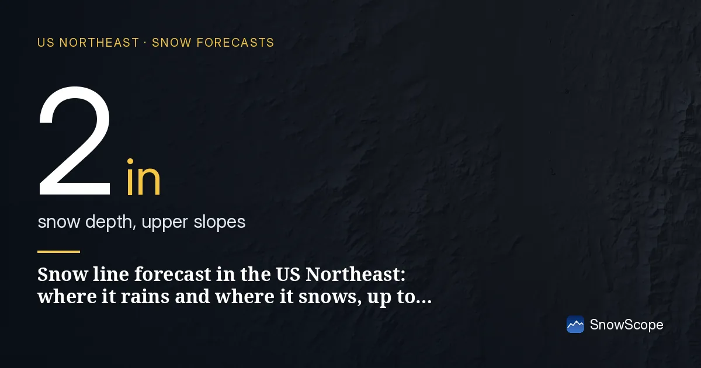
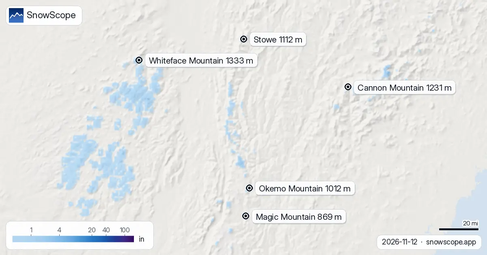
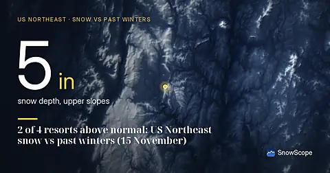

Snow line forecast in the US Northeast: where it rains and where it snows, up to 3,609 ft (12 November)
Rain is coming to the US Northeast, but the freezing level is high enough on Thursday 12 November to keep upper runs dry. The 0 °C level swings between 591 ft (180 m) at dawn and 4,593 ft (1,400 m) at midday. By Friday and Saturday it drops sharply, pushing the snow line much lower.
See the live snow forecast for Whiteface Mountain in the SnowScope appSnow depth, powder alerts and the 3D map, free.
Thursday: upper runs escape the rain
On 12 November the air warms fast during the day. At Whiteface Mountain, Cannon Mountain and Stowe the snow line climbs to around 1,640 ft to 2,297 ft (500 to 700 m) in the warmest hours. That means rain or wet snow at the base, but snow on upper terrain.
Magic Mountain and Okemo Mountain sit a little lower in elevation. At Magic Mountain on 12 November the snow line reaches 3,609 ft (1,100 m), which is above the top of the mountain (2,851 ft / 869 m). Any rain that day falls across the whole area.
| Resort | Snow depth | New snow, 72 h | Coming, next days | Top |
|---|---|---|---|---|
| Whiteface Mountain | 2 in (4 cm) | 3 in (7 cm) | 3 in (7 cm) | 4,373 ft (1,333 m) |
| Cannon Mountain | 0 in (0 cm) | 2 in (5 cm) | 4 in (9 cm) | 4,039 ft (1,231 m) |
| Stowe | 1 in (2 cm) | 2 in (6 cm) | 4 in (11 cm) | 3,648 ft (1,112 m) |
| Okemo Mountain | 2 in (5 cm) | 2 in (6 cm) | 5 in (13 cm) | 3,320 ft (1,012 m) |
| Magic Mountain | 0 in (0 cm) | 1 in (3 cm) | 4 in (10 cm) | 2,851 ft (869 m) |

Friday and Saturday: the freeze line drops fast
Friday 13 November brings a sharp cold snap. The 0 °C level falls from 262 ft (80 m) at dawn to only 2,559 ft (780 m) at midday. The snow line sits about 300 m lower, so it stays near 500 ft to 500 ft across the region. Snow starts falling at much lower elevations.
Saturday 14 November is the coldest day in the forecast. The freezing level reaches 0 ft (0 m) at dawn—meaning snow falls all the way down—and climbs only to 1,837 ft (560 m) at the warmest hours. By this point, fresh snow is on the map across the entire region.

Rain on existing snow: the risk window
The danger comes when the snow line sits high and rain falls. On Thursday 12 November at Okemo Mountain the snow line reaches 3,281 ft (1,000 m) in the warmest hours, while rain still falls lower. The base sits at 1,158 ft (353 m), so rain lands on dry ground, not on the snowpack.
Tug Hill gets 11 mm in the forecast window. While it falls, the snow line stays near 1,247 ft (380 m), which is well above the summit. Stowe receives 19 mm; during wet hours the snow line holds close to 820 ft (250 m). No rain hits the snow already on the mountain.
What the 0 °C level means in the field
The 0 °C level is where the air temperature crosses freezing. Snowflakes do not turn to rain instantly at that height. They begin to melt as they fall through warmer air, and that melting takes time—usually about 300 m of descent. So rain begins around 300 m below the 0 °C level, at a height we call the snow line.
The time of day matters too. Cold air at dawn and dusk pushes the snow line higher. Warm midday hours push it down steeply. This is why upper and north-facing slopes hold the best snow during warm rain events: the snow line climbs less when you are on a cold face, and you catch the morning before the air warms.
What to expect on the map
On 12 November, 2,930 km² across the US Northeast holds some snow, but only 17 resorts have measurable cover. By 15 November that changes. Cold air and 19 mm at Stowe, 11 mm at Tug Hill, and 9 mm at Cannon Mountain will push 39 resorts into the snow-covered zone. Snow extent jumps from 2,930 km² to 19,660 km².
Upper slopes at resorts like Stowe (11 cm new forecast), Okemo (13 cm), and Cannon (9 cm) will fill in fastest. Lower terrain stays marginal until the freezing level drops on Friday. By Saturday, the whole mountain should be snow-covered, though base snow may still be thin early season.
Tips for skiers
- Thursday 12 November: aim for upper terrain and north-facing slopes. The snow line climbs highest at midday (up to 3,609 ft at Magic Mountain), so ski early and finish before lunch.
- Friday and Saturday bring colder air. The snow line drops steeply—to 200 ft on both days—making lower runs safer and more skiable, though snow depth remains thin.
- The 0 °C level forecast carries an error of several hundred metres. Check the SnowScope map again the evening before you go.
- Before any off-piste or touring, read the official avalanche bulletin for your area.
- Early-season snow is thin. Rocks and thin spots are common. Stick to marked runs and check the resort website for open terrain.
About these numbers
Resort snow depths are the deepest snow on the resort's upper slopes on the date shown; they are estimates for an area, not a measurement at one point. Forecasts can change. Always read the official avalanche bulletin before going off-piste.
Official avalanche bulletins: Mount Washington Avalanche Center
Cite this report
For research, teaching or the press: the numbers and charts are free to reuse under CC BY 4.0 with this citation.
SnowScope (2026), Snow line forecast in the US Northeast: where it rains and where it snows, up to 3,609 ft (12 November), https://snowscope.app/blog/en/2026/11/us-northeast-freezing-level-snow-line-12-november-2026.html, accessed 2026-11-12
SnowScope (Atlas Labs). (2026, November 12). Snow line forecast in the US Northeast: where it rains and where it snows, up to 3,609 ft (12 November). SnowScope snow reports. https://snowscope.app/blog/en/2026/11/us-northeast-freezing-level-snow-line-12-november-2026.html
BibTeX
@misc{snowscope2026usnortheastfreezinglevel,
author = {{SnowScope (Atlas Labs)}},
title = {Snow line forecast in the US Northeast: where it rains and where it snows, up to 3,609 ft (12 November)},
year = {2026},
month = nov,
howpublished = {\url{https://snowscope.app/blog/en/2026/11/us-northeast-freezing-level-snow-line-12-november-2026.html}},
note = {Published 2026-11-12 20:48 UTC; accessed 2026-11-12}
}· CC BY 4.0 · Methods, data and tools →
Whiteface Mountain: snow and temperature by height, this winter vs last (tools) →
Follow Whiteface Mountain
Free: a message when fresh snow is coming, and the forecast every morning.
More snow reports

Okemo Mountain will get 15 in (38 cm) of new snow by November 14, with 11 in (29 cm) on November 13, SnowScope from November 11 shows.

5 in (12 cm) expected at Stowe by 16 November. Most snow falls 14-15 November on upper slopes. Data from 13 November.

2 of 4: that is how many resorts in the US Northeast are clearly above normal today. How does this winter look so far? We set today's snow at 4 …